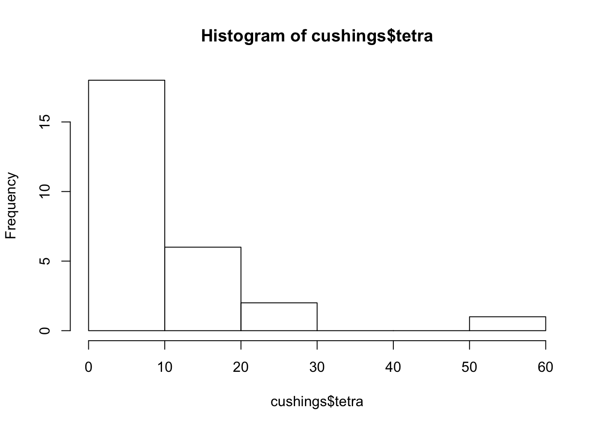

Exercise Solutions
Chapter 1
Exercise 1.1
According to the information in the question the polling was conducted among 500 registered voters. The 500 registered voters corresponds to the sample.
The percentage, among all registered voters of the given party, of those that prefer a male candidate is a parameter. This quantity is a characteristic of the population.
It is given that 42% of the sample prefer a female candidate. This quantity is a numerical characteristic of the data, of the sample. Hence, it is a statistic.
The voters in the state that are registered to the given party is the target population.
Exercise 1.2
One may read the data into R and create a table using the code:
n.cost <- c(4,2,1,1,0,2,1,2,4,2,5,3,1,5,1,5,1,2,1,1,3,4,2,4,3)
table(n.cost)## n.cost
## 0 1 2 3 4 5
## 1 8 6 3 4 3For convenience, one may also create the bar plot of the data using the code:
plot(table(n.cost))The number of days in which 5 costumers where waiting is 3, since the frequency of the value “5†in the data is 3. That can be seen from the table by noticing the number below value “5†is 3. It can also be seen from the bar plot by observing that the hight of the bar above the value “5†is equal to 3.
The number of waiting costumers that occurred the largest number of times is 1. The value “1†occurred 8 times, more than any other value. Notice that the bar above this value is the highest.
The value “0”, which occurred only once, occurred the least number of times.
Chapter 2
Exercise 2.1
The relative frequency of direct hits of category 1 is 0.3993. Notice that the cumulative relative frequency of category 1 and 2 hits, the sum of the relative frequency of both categories, is 0.6630. The relative frequency of category 2 hits is 0.2637. Consequently, the relative frequency of direct hits of category 1 is 0.6630 - 0.2637 = 0.3993.
The relative frequency of direct hits of category 4 or more is 0.0769. Observe that the cumulative relative of the value “3†is 0.6630 + 0.2601 = 0.9231. This follows from the fact that the cumulative relative frequency of the value “2†is 0.6630 and the relative frequency of the value “3†is 0.2601. The total cumulative relative frequency is 1.0000. The relative frequency of direct hits of category 4 or more is the difference between the total cumulative relative frequency and cumulative relative frequency of 3 hits: 1.0000 - 0.9231 = 0.0769.
Exercise 2.2
The total number of cows that were involved in this study is 45. The object “
freq†contain the table of frequency of the cows, divided according to the number of calves that they had. The cumulative frequency of all the cows that had 7 calves or less, which includes all cows in the study, is reported under the number “7†in the output of the expression “cumsum(freq)”. This number is 45.The number of cows that gave birth to a total of 4 calves is 10. Indeed, the cumulative frequency of cows that gave birth to 4 calves or less is 28. The cumulative frequency of cows that gave birth to 3 calves or less is 18. The frequency of cows that gave birth to exactly 4 calves is the difference between these two numbers: 28 - 18 = 10.
The relative frequency of cows that gave birth to at least 4 calves is \(27/45 = 0.6\). Notice that the cumulative frequency of cows that gave at most 3 calves is 18. The total number of cows is 45. Hence, the number of cows with 4 or more calves is the difference between these two numbers: 45 - 18 = 27. The relative frequency of such cows is the ratio between this number and the total number of cows: \(27/45 = 0.6\).
Chapter 3
Exercise 3.1
Consider the data “
x1”. From the summary we see that it is distributed in the range between 0 and slightly below 5. The central 50% of the distribution are located between 2.5 and 3.8. The mean and median are approximately equal to each other, which suggests an approximately symmetric distribution. Consider the histograms in Figure 3.3. Histograms 1 and 3 correspond to a distributions in the appropriate range. However, the distribution in Histogram 3 is concentrated in lower values than suggested by the given first and third quartiles. Consequently, we match the summary of “x1†with Histogram 1.Consider the data “
x2”. Again, the distribution is in the range between 0 and slightly below 5. The central 50% of the distribution are located between 0.6 and 1.8. The mean is larger than the median, which suggests a distribution skewed to the right. Therefore, we match the summary of “x2†with Histogram 3.For the data in “
x3†we may note that the distribution is in the range between 2 and 6. The histogram that fits this description is Histograms 2.The box plot is essentially a graphical representation of the information presented by the function “
summary”. Following the rational of matching the summary with the histograms we may obtain that Histogram 1 should be matched with Box-plot 2 in Figure 3.4, Histogram 2 matches Box-plot 3, and Histogram 3 matches Box-plot 1. Indeed, it is easier to match the box plots with the summaries. However, it is a good idea to practice the direct matching of histograms with box plots.The data in “
x1†fits Box-plot 2 in Figure 3.4. The value 0.000 is the smallest value in the data and it corresponds to the smallest point in the box plot. Since this point is below the bottom whisker it follows that it is an outlier. More directly, we may note that the inter-quartile range is equal to \(IQR = 3.840 - 2.498 = 1.342\). The lower threshold is equal to \(2.498 - 1.5 \times 1.342 = 0.485\), which is larger that the given value. Consequently, the given value 0.000 is an outlier.Observe that the data in “
x3†fits Box-plot 3 in Figure 3.4. The vale 6.414 is the largest value in the data and it corresponds to the endpoint of the upper whisker in the box plot and is not an outlier. Alternatively, we may note that the inter-quartile range is equal to \(IQR = 4.690 - 3.391 = 1.299\). The upper threshold is equal to \(4.690 + 1.5 \times 1.299 = 6.6385\), which is larger that the given value. Consequently, the given value 6.414 is not an outlier.
Exercise 3.2
In order to compute the mean of the data we may write the following simple
Rcode:x.val <- c(2,4,6,8,10) freq <- c(10,6,10,2,2) rel.freq <- freq/sum(freq) x.bar <- sum(x.val*rel.freq) x.bar## [1] 4.6666667We created an object “
x.val†that contains the unique values of the data and an object “freq†that contains the frequencies of the values. The object “rel.freq†contains the relative frequencies, the ratios between the frequencies and the number of observations. The average is computed as the sum of the products of the values with their relative frequencies. It is stored in the objects “x.bar†and obtains the value 4.666667.An alternative approach is to reconstruct the original data from the frequency table. A simple trick that will do the job is to use the function “
rep”. The first argument to this function is a sequence of values. If the second argument is a sequence of the same length that contains integers then the output will be composed of a sequence that contains the values of the first sequence, each repeated a number of times indicated by the second argument. Specifically, if we enter to this function the unique value “x.val†and the frequency of the values “freq†then the output will be the sequence of values of the original sequence “x”:x <- rep(x.val,freq) x## [1] 2 2 2 2 2 2 2 2 2 2 4 4 4 4 4 4 6 6 6 6 6 6 6 ## [24] 6 6 6 8 8 10 10mean(x)## [1] 4.6666667Observe that when we apply the function “
mean†to “x†we get again the value 4.666667.In order to compute the sample standard deviation we may compute first the sample variance and then take the square root of the result:
var.x <- sum((x.val-x.bar)^2*freq)/(sum(freq)-1) sqrt(var.x)## [1] 2.4259137Notice that the expression “
sum((x.val-x.bar)^2*freq)†compute the sum of square deviations. The expression “(sum(freq)-1)†produces the number of observations minus 1 (\(n-1\)). The ratio of the two gives the sample variance.Alternatively, had we produced the object “
x†that contains the data, we may apply the function “sd†to get the sample standard deviation:sd(x)## [1] 2.4259137Observe that in both forms of computation we obtain the same result: 2.425914.
In order to compute the median one may produce the table of cumulative relative frequencies of “
x”:data.frame(x.val,cumsum(rel.freq))## x.val cumsum.rel.freq. ## 1 2 0.33333333 ## 2 4 0.53333333 ## 3 6 0.86666667 ## 4 8 0.93333333 ## 5 10 1.00000000Recall that the object “
x.val†contains the unique values of the data. The expression “cumsum(rel.freq)†produces the cumulative relative frequencies. The function “data.frame†puts these two variables into a single data frame and provides a clearer representation of the results.Notice that more that 50% of the observations have value 4 or less. However, strictly less than 50% of the observations have value 2 or less. Consequently, the median is 4. (If the value of the cumulative relative frequency at 4 would have been exactly 50% then the median would have been the average between 4 and the value larger than 4.)
In the case that we produce the values of the data “
x†then we may apply the function “summary†to it and obtain the median this waysummary(x)## Min. 1st Qu. Median Mean 3rd Qu. Max. ## 2.0000 2.0000 4.0000 4.6667 6.0000 10.0000As for the inter-quartile range (IQR) notice that the first quartile is 2 and the third quartile is 6. Hence, the inter-quartile range is equal to 6 - 2 = 4. The quartiles can be read directly from the output of the function “
summary†or can be obtained from the data frame of the cumulative relative frequencies. For the later observe that more than 25% of the data are less or equal to 2 and more 75% of the data are less or equal to 6 (with strictly less than 75% less or equal to 4).In order to answer the last question we conduct the computation: \((10 - 4.666667)/2.425914 = 2.198484\). We conclude that the value 10 is approximately 2.1985 standard deviations above the mean.
Chapter 4
Exercise 4.1
- Consult Table 4.4. The probabilities of the different values of \(Y\) are \(\{p, 2p, \ldots, 6p\}\). These probabilities sum to 1, consequently
\[p + 2p + 3 p + 4 p + 5 p + 6p = (1+2+3+4+5+6)p = 21 p = 1 \Longrightarrow p = 1/21\;.\]
- The event \(\{Y < 3\}\) contains the values 0, 1 and 2. Therefore,
\[\Prob(Y < 3) = \Prob(Y=0) + \Prob(Y=1) + \Prob(Y=2) = \frac{1}{21} + \frac{2}{21} + \frac{3}{21} = \frac{6}{21}= 0.2857\;.\]
- The event \(\{Y = \mbox{odd}\}\) contains the values 1, 3 and 5. Therefore,
\[\Prob(Y = \mbox{odd}) = \Prob(Y=1) + \Prob(Y=3) + \Prob(Y=5) = \frac{2}{21} + \frac{4}{21} + \frac{6}{21} = \frac{12}{21}= 0.5714\;.\]
- The event \(\{1 \leq Y < 4\}\) contains the values 1, 2 and 3. Therefore,
\[\Prob(1 \leq Y < 4) = \Prob(Y=1) + \Prob(Y=2) + \Prob(Y=3) = \frac{2}{21} + \frac{3}{21} + \frac{4}{21} = \frac{9}{21}= 0.4286\;.\]
- The event \(\{|Y -3| < 1.5\}\) contains the values 2, 3 and 4. Therefore,
\[\Prob(|Y -3| < 1.5) = \Prob(Y=2) + \Prob(Y=3) + \Prob(Y=4) = \frac{3}{21} + \frac{4}{21} + \frac{5}{21} = \frac{12}{21}= 0.5714\;.\]
The values that the random variable \(Y\) obtains are the numbers 0, 1, 2, …, 5, with probabilities \(\{1/21, 2/21, \ldots, 6/21\}\), respectively. The expectation is obtained by the multiplication of the values by their respective probabilities and the summation of the products. Let us carry out the computation in
R:Y.val <- c(0,1,2,3,4,5) P.val <- c(1,2,3,4,5,6)/21 E <- sum(Y.val*P.val) E## [1] 3.3333333We obtain an expectation \(\Expec(Y) = 3.3333\).
The values that the random variable \(Y\) obtains are the numbers 0, 1, 2, …, 5, with probabilities \(\{1/21, 2/21, \ldots, 6/21\}\), respectively. The expectation is equal to \(\Expec(Y) = 3.333333\). The variance is obtained by the multiplication of the squared deviation from the expectation of the values by their respective probabilities and the summation of the products. Let us carry out the computation in
R:Var <- sum((Y.val-E)^2*P.val)We obtain a variance \(\Var(Y) = 2.2222\).
The standard deviation is the square root of the variance: \(\sqrt{\Var(Y)} = \sqrt{2.2222} = 1.4907\).
Exercise 4.2
An outcome of the game of chance may be represented by a sequence of length three composed of the letters “H†and “T”. For example, the sequence “THH“ corresponds to the case where the first toss produced a”Tail“, the second a “Head†and the third a “Head”.
With this notation we obtain that the possible outcomes of the game are \(\{\mbox{HHH}, \mbox{THH},\mbox{HTH}, \mbox{TTH},\mbox{HHT}, \mbox{THT},\mbox{HTT}, \mbox{TTT}\}\). All outcomes are equally likely. There are 8 possible outcomes and only one of which corresponds to winning. Consequently, the probability of winning is 1/8.
Consider the previous solution. One looses if any other of the outcomes occurs. Hence, the probability of loosing is 7/8.
Denote the gain of the player by \(X\). The random variable \(X\) may obtain two values: 10-2 = 8 if the player wins and -2 if the player looses. The probabilities of these values are {1/8, 7/8}, respectively. Therefore, the expected gain, the expectation of \(X\) is:
\[\Expec(X) = 8 \times \frac{1}{8} + (-2) \times \frac{7}{8} =-0.75\;.\]
Chapter 5
Exercise 5.1
- The Binomial distribution is a reasonable model for the number of people that develop high fever as result of the vaccination. Let \(X\) be the number of people that do so in a give day. Hence, \(X \sim \mbox{Binomial}(500,0.09)\). According to the formula for the expectation in the Binomial distribution, since \(n=500\) and \(p=0.09\), we get that:
\[\Expec(X) = n p = 500 \times 0.09 = 45\;.\]
- Let \(X \sim \mbox{Binomial}(500,0.09)\). Using the formula for the variance for the Binomial distribution we get that:
\[\Var(X) = n p(1-p) = 500 \times 0.09\times 0.91 = 40.95\;.\] Hence, since \(\sqrt{Var(X)} = \sqrt{40.95} = 6.3992\), the standard deviation is 6.3992.
- Let \(X \sim \mbox{Binomial}(500,0.09)\). The probability that more than 40 people will develop a reaction may be computed as the difference between 1 and the probability that 40 people or less will develop a reaction:
\[\Prob(X > 40) = 1- \Prob(X \leq 40)\;.\] The probability can be computes with the aid of the function “pbinom†that produces the cumulative probability of the Binomial distribution:
```r
1 - pbinom(40,500,0.09)
```
```
## [1] 0.75564737
```The probability that the number of people that will develop a reaction is between 50 and 45 (inclusive) is the difference between \(\Prob(X\leq 50)\) and \(\Prob(X < 45) = \Prob(X \leq 44)\). Apply the function “
pbinom†to get:pbinom(50,500,0.09) - pbinom(44,500,0.09)## [1] 0.32923206
Exercise 5.2
The plots can be produced with the following code, which should be run one line at a time:
x <- 0:15 plot(x,dnbinom(x,2,0.5),type="h")
plot(x,dnbinom(x,4,0.5),type="h")
plot(x,dnbinom(x,8,0.8),type="h")
The first plot, that corresponds to \(X_1 \sim \mbox{Negative-Binomial}(2,0.5)\), fits Barplot 3. Notice that the distribution tends to obtain smaller values and that the probability of the value “0†is equal to the probability of the value “1”.
The second plot, the one that corresponds to \(X_2 \sim \mbox{Negative-Binomial}(4,0.5)\), is associated with Barplot 1. Notice that the distribution tends to obtain larger values. For example, the probability of the value “10†is substantially larger than zero, where for the other two plots this is not the case.
The third plot, the one that corresponds to \(X_3 \sim \mbox{Negative-Binomial}(8,0.8)\), matches Barplot 2. Observe that this distribution tends to produce smaller probabilities for the small values as well as for the larger values. Overall, it is more concentrated than the other two.
Barplot 1 corresponds to a distribution that tends to obtain larger values than the other two distributions. Consequently, the expectation of this distribution should be larger. The conclusion is that the pair \(\Expec(X) = 4\), \(\Var(X) = 8\) should be associated with this distribution.
Barplot 2 describes a distribution that produce smaller probabilities for the small values as well as for the larger values and is more concentrated than the other two. The expectations of the two remaining distributions are equal to each other and the variance of the pair \(\Expec(X) = 2\), \(\Var(X) = 2.5\) is smaller. Consequently, this is the pair that should be matched with this box plot.
This leaves only Barplot 3, that should be matched with the pair \(\Expec(X) = 2\), \(\Var(X) = 4\).
Chapter 6
Exercise 6.1
Let \(X\) be the total weight of 8 people. By the assumption, \(X \sim \mbox{Normal}(560, 57^2)\). We are interested in the probability \(\Prob(X > 650)\). This probability is equal to the difference between 1 and the probability \(\Prob(X \leq 650)\). We use the function “
pnorm†in order to carry out the computation:1 - pnorm(650,560,57)## [1] 0.057174065We get that the probability that the total weight of 8 people exceeds 650kg is equal to 0.05717406.
Let \(Y\) be the total weight of 9 people. By the assumption, \(Y \sim \mbox{Normal}(630, 61^2)\). We are interested in the probability \(\Prob(Y > 650)\). This probability is equal to the difference between 1 and the probability \(\Prob(Y \leq 650)\). We use again the function “
pnorm†in order to carry out the computation:1 - pnorm(650,630,61)## [1] 0.37150541We get that the probability that the total weight of 9 people exceeds 650kg is much higher and is equal to 0.3715054.
Again, \(X \sim \mbox{Normal}(560, 57^2)\), where \(X\) is the total weight of 8 people. In order to find the central region that contains 80% of the distribution we need to identify the 10%-percentile and the 90%-percentile of \(X\). We use the function “
qnorm†in the code:qnorm(0.1,560,57)## [1] 486.95156qnorm(0.9,560,57)## [1] 633.04844The requested region is the interval \[486.9516, 633.0484\].
As before, \(Y \sim \mbox{Normal}(630, 61^2)\), where \(Y\) is the total weight of 9 people. In order to find the central region that contains 80% of the distribution we need to identify the 10%-percentile and the 90%-percentile of \(Y\). The computation this time produces:
qnorm(0.1,630,61)## [1] 551.82535qnorm(0.9,630,61)## [1] 708.17465and the region is \[551.8254, 708.1746\].
Exercise 6.2
The probability \(\Prob(X > 11)\) can be computed as the difference between 1 and the probability \(\Prob(X \leq 11)\). The latter probability can be computed with the function “
pbinom”:1 - pbinom(11,27,0.32)## [1] 0.12039255Therefore, \(\Prob(X > 11) = 0.1203926\).
Refer again to the probability \(\Prob(X > 11)\). A formal application of the Normal approximation replaces in the computation the Binomial distribution by the Normal distribution with the same mean and variance. Since \(\Expec(X) = n \cdot p = 27 \cdot 0.32 = 8.64\) and \(\Var(X) = n \cdot p \cdot (1-p) = 27 \cdot 0.32 \cdot 0.68 = 5.8752\). If we take \(X \sim \mbox{Normal}(8.64,5.8752)\) and use the function “
pnorm†we get:1 - pnorm(11,27*0.32,sqrt(27*0.32*0.68))## [1] 0.1651164Therefore, the current Normal approximation proposes \(\Prob(X > 11) \approx 0.1651164\).
The continuity correction, that consider interval of range 0.5 about each value, replace \(\Prob(X > 11)\), that involves the values \(\{12, 13, \ldots, 27\}\), by the event \(\Prob(X > 11.5)\). The Normal approximation uses the Normal distribution with the same mean and variance. Since \(\Expec(X) = 8.64\) and \(\Var(X) = 5.8752\). If we take \(X \sim \mbox{Normal}(8.64,5.8752)\) and use the function “
pnorm†we get:1 - pnorm(11.5,27*0.32,sqrt(27*0.32*0.68))## [1] 0.11901486The Normal approximation with continuity correction proposes \(\Prob(X > 11) \approx 0.1190149\).
The Poisson approximation replaces the Binomial distribution by the Poisson distribution with the same expectation. The expectation is \(\Expec(X) = n \cdot p = 27 \cdot 0.32 = 8.64\). If we take \(X \sim \mbox{Poisson}(8.64)\) and use the function “
ppois†we get:1 - ppois(11,27*0.32)## [1] 0.16352317
Therefore, the Poisson approximation proposes \(\Prob(X > 11) \approx 0.1651164\).
Chapter 7
Exercise 7.1
After placing the file “
pop2.csv†in the working directory one may produce a data frame with the content of the file and compute the average of the variable “bmi†using the code:pop.2 <- read.csv(file="_data/pop2.csv") mean(pop.2$bmi)## [1] 24.984457We obtain that the population average of the variable is equal to 24.98446.
Applying the function “
sd†to the sequence of population values produces the population standard deviation:sd(pop.2$bmi)## [1] 4.188511In turns out that the standard deviation of the measurement is 4.188511.
In order to compute the expectation under the sampling distribution of the sample average we conduct a simulation. The simulation produces (an approximation) of the sampling distribution of the sample average. The sampling distribution is represented by the content of the sequence “
X.bar”:X.bar <- rep(0,10^5) for(i in 1:10^5) { X.samp <- sample(pop.2$bmi,150) X.bar[i] <- mean(X.samp) } mean(X.bar)## [1] 24.986574Initially, we produce a vector of zeros of the given lenght (100,000). In each iteration of the “
for†loop a random sample of size 150 is selected from the population. The sample average is computed and stored in the sequence “X.bar”. At the end of all the iterations all the zeros are replaced by evaluations of the sample average.The expectation of the sampling distribution of the sample average is computed by the application of the function “
mean†to the sequence that represents the sampling distribution of the sample average. The result for the current is 24.98681, which is vary similar95 to the population average 24.98446.The standard deviation of the sample average under the sampling distribution is computed using the function “
sd”:sd(X.bar)## [1] 0.34220721The resulting standard deviation is 0.3422717. Recall that the standard deviation of a single measurement is equal to 4.188511 and that the sample size is \(n=150\). The ratio between the standard deviation of the measurement and the square root of 150 is \(4.188511/\sqrt{150} =0.3419905\), which is similar in value to the standard deviation of the sample average[^4].
The central region that contains 80% of the sampling distribution of the sample average can be identified with the aid of the function “
quantile”:quantile(X.bar,c(0.1,0.9))## 10% 90% ## 24.548109 25.425443The value 24.54972 is the 10%-percentile of the sampling distribution. To the left of this value are 10% of the distribution. The value 25.42629 is the 90%-percentile of the sampling distribution. To the right of this value are 10% of the distribution. Between these two values are 80% of the sampling distribution.
The Normal approximation, which is the conclusion of the Central Limit Theorem substitutes the sampling distribution of the sample average by the Normal distribution with the same expectation and standard deviation. The percentiles are computed with the function “
qnorm”:qnorm(c(0.1,0.9),mean(X.bar),sd(X.bar))## [1] 24.548018 25.425130Observe that we used the expectation and the standard deviation of the sample average in the function. The resulting interval is \([24.54817, 25.42545]\), which is similar to the interval \([24.54972, 25.42629]\) which was obtained via simulations.
Exercise 7.2
Denote by \(X\) the distance from the specified endpoint of a random hit. Observe that \(X \sim \mbox{Uniform}(0,10)\). The 25 hits form a sample \(X_1, X_2, \ldots, X_{25}\) from this distribution and the sample average \(\bar X\) is the average of these random locations. The expectation of the average is equal to the expectation of a single measurement. Since \(\Expec(X) = (a + b)/2 = (0 + 10)/2 = 5\) we get that \(\Expec(\bar X) = 5\).
The variance of the sample average is equal to the variance of a single measurement, divided by the sample size. The variance of the Uniform distribution is \(\Var(X) = (a + b)^2/12 = (10-0)^2/12 = 8.333333\). The standard deviation of the sample average is equal to the standard deviation of the sample average is equal to the standard deviation of a single measurement, divided by the square root of the sample size. The sample size is \(n=25\). Consequently, the standard deviation of the average is \(\sqrt{8.333333/25}=0.5773503\).
The left-most third of the detector is the interval to the left of 10/3. The distribution of the sample average, according to the Central Limit Theorem, is Normal. The probability of being less than 10/3 for the Normal distribution may be computed with the function “
pnorm”:mu <- 5 sig <- sqrt(10^2/(12*25)) pnorm(10/3,mu,sig)## [1] 0.0019462086The expectation and the standard deviation of the sample average are used in computation of the probability. The probability is 0.001946209, about 0.2%.
The central region in the \(\mbox{Normal}(\mu,\sigma^2)\) distribution that contains 99% of the distribution is of the form \(\mu \pm \mbox{\texttt{qnorm(0.995)}}\cdot \sigma\), where “
qnorm(0.995)†is the 99.5%-percentile of the Standard Normal distribution. Therefore, \(c =\mbox{\texttt{qnorm(0.995)}}\cdot \sigma\):qnorm(0.995)*sig## [1] 1.4871557We get that \(c=1.487156\).
Chapter 9
Exercise 9.1
Let us read the data into a data frame by the name “
magnets†and apply the function “summary†to the data frame:magnets <- read.csv("_data/magnets.csv") summary(magnets)## score1 score2 change active ## Min. : 7.00 Min. : 0.00 Min. : 0.0 "1":29 ## 1st Qu.: 9.25 1st Qu.: 4.00 1st Qu.: 0.0 "2":21 ## Median :10.00 Median : 6.00 Median : 3.5 ## Mean : 9.58 Mean : 6.08 Mean : 3.5 ## 3rd Qu.:10.00 3rd Qu.: 9.75 3rd Qu.: 6.0 ## Max. :10.00 Max. :10.00 Max. :10.0The variable “
change†contains the difference between the patient’s rating before the application of the device and the rating after the application. The sample average of this variable is reported as the “Mean†for this variable and is equal to 3.5.The variable “
active†is a factor. Observe that the summary of this variable lists the two levels of the variable and the frequency of each level. Indeed, the levels are coded with numbers but, nonetheless, the variable is a factor[^12].Based on the hint we know that the expressions “
change[1:29]†and “change[30:50]†produce the values of the variable “change†for the patients that were treated with active magnets and by inactive placebo, respectively. We apply the function “mean†to these sub-sequences:mean(magnets$change[1:29])## [1] 5.2413793mean(magnets$change[30:50])## [1] 1.0952381The sample average for the patients that were treated with active magnets is 5.241379 and sample average for the patients that were treated with inactive placebo is 1.095238.
We apply the function “
sd†to these sub-sequences:sd(magnets$change[1:29])## [1] 3.2365675sd(magnets$change[30:50])## [1] 1.5781243The sample standard deviation for the patients that were treated with active magnets is 3.236568 and sample standard deviation for the patients that were treated with inactive placebo is 1.578124.
We apply the function “
boxplot†to each sub-sequences:boxplot(magnets$change[1:29])
boxplot(magnets$change[30:50])
The first box-plot corresponds to the sub-sequence of the patients that received an active magnet. There are no outliers in this plot. The second box-plot corresponds to the sub-sequence of the patients that received an inactive placebo. Three values, the values “3”, “4”, and “5†are associated with outliers. Let us see what is the total number of observations that receive these values:
table(magnets$change[30:50])## ## 0 1 2 3 4 5 ## 11 5 1 1 2 1One may see that a single observation obtained the value “3”, another one obtained the value “5†and 2 observations obtained the value “4”, a total of 4 outliers[^13]. Notice that the single point that is associated with the value “4†actually represents 2 observations and not one.
Exercise 9.2
Let us run the following simulation:
mu1 <- 3.5 sig1 <- 3 mu2 <- 3.5 sig2 <- 1.5 test.stat <- rep(0,10^5) for(i in 1:10^5) { X1 <- rnorm(29,mu1,sig1) X2 <- rnorm(21,mu2,sig2) X1.bar <- mean(X1) X2.bar <- mean(X2) X1.var <- var(X1) X2.var <- var(X2) test.stat[i] <- (X1.bar-X2.bar)/sqrt(X1.var/29 + X2.var/21) } quantile(test.stat,c(0.025,0.975))## 2.5% 97.5% ## -2.0220796 2.0109741Observe that each iteration of the simulation involves the generation of two samples. One sample is of size 29 and it is generated from the \(\mathrm{Normal}(3.5,3^2)\) distribution and the other sample is of size 21 and it is generated from the \(\mathrm{Normal}(3.5,1.5^2)\) distribution. The sample average and the sample variance are computed for each sample. The test statistic is computed based on these averages and variances and it is stored in the appropriate position of the sequence “
test.stat”.The values of the sequence “
test.stat†at the end of all the iterations represent the sampling distribution of the static. The application of the function “quantile†to the sequence gives the 0.025-percentiles and the 0.975-percentiles of the sampling distribution, which are -2.014838 and 2.018435. It follows that the interval \([-2.014838, 2.018435]\) contains about 95% of the sampling distribution of the statistic.In order to evaluate the statistic for the given data set we apply the same steps that were used in the simulation for the computation of the statistic:
x1.bar <- mean(magnets$change[1:29]) x2.bar <- mean(magnets$change[30:50]) x1.var <- var(magnets$change[1:29]) x2.var <- var(magnets$change[30:50]) (x1.bar-x2.bar)/sqrt(x1.var/29 + x2.var/21)## [1] 5.9856008In the first line we compute the sample average for the first 29 patients and in the second line we compute it for the last 21 patients. In the third and fourth lines we do the same for the sample variances of the two types of patients. Finally, in the fifth line we evaluate the statistic. The computed value of the statistic turns out to be 5.985601, a value that does not belong to the interval \([-2.014838, 2.018435]\).
Chapter 10
Exercise 10.1
We simulate the sampling distribution of the average and the median in a sample generated from the Normal distribution. In order to do so we copy the code that was used in Subsection 10.3.2, replacing the object “
mid.range†by the object “X.med†and using the function “median†in order to compute the sample median instead of the computation of the mid-range statistic:mu <- 3 sig <- sqrt(2) X.bar <- rep(0,10^5) X.med <- rep(0,10^5) for(i in 1:10^5) { X <- rnorm(100,mu,sig) X.bar[i] <- mean(X) X.med[i] <- median(X) }The sequence “
X.bar†represents the sampling distribution of the sample average and the sequence “X.med†represents the sampling distribution of the sample median. We apply the function “mean†to these sequences in order to obtain the expectations of the estimators:mean(X.bar)## [1] 2.9998173mean(X.med)## [1] 2.9995462The expectation of the measurement, the parameter of interest is equal to 3. Observe that expectations of the estimators are essentially equal to the expectation[^13]. Consequently, both estimators are unbiased estimators of the expectation of the measurement.
In order to obtain the variances of the estimators we apply the function “
var†to the sequences that represent their sampling distributions:var(X.bar)## [1] 0.019953446var(X.med)## [1] 0.030815186Observe that the variance of the sample average is essentially equal to \(0.020\) and the variance of the sample median is essentially equal to \(0.0312\). The mean square error of an unbiased estimator is equal to its variance. Hence, these numbers represent the mean square errors of the estimators. It follows that the mean square error of the sample average is less than the mean square error of the sample median in the estimation of the expectation of a Normal measurement.
We repeat the same steps as before for the Uniform distribution. Notice that we use the parameters \(a=0.5\) and \(b=5.5\) the same way we did in Subsection 10.3.2. These parameters produce an expectation \(\Expec(X) = 3\) and a variance \(\Var(X) = 2.083333\):
a <- 0.5 b <- 5.5 X.bar <- rep(0,10^5) X.med <- rep(0,10^5) for(i in 1:10^5) { X <- runif(100,a,b) X.bar[i] <- mean(X) X.med[i] <- median(X) }Applying the function “
mean†to the sequences that represent the sampling distribution of the estimators we obtain that both estimators are essentially unbiased[^14]:mean(X.bar)## [1] 2.9996772mean(X.med)## [1] 2.9995151Compute the variances:
var(X.bar)## [1] 0.020819047var(X.med)## [1] 0.06058218Observe \(0.021\) is, essentially, the value of the variance of the sample average[^15]. The variance of the sample median is essentially equal to 0.061. The variance of each of the estimators is equal to it’s mean square error. This is the case since the estimators are unbiased. Consequently, we again obtain that the mean square error of the sample average is less than that of the sample median.
Exercise 10.2
Assuming that the file “
ex2.csv†is saved in the working directory, one may read the content of the file into a data frame and produce a summary of the content of the data frame using the code:ex2 <- read.csv("_data/ex2.csv") summary(ex2)## id sex age bmi ## Min. :1024982 FEMALE:74 Min. :26.000 Min. :15.121 ## 1st Qu.:3172782 MALE :76 1st Qu.:32.000 1st Qu.:22.023 ## Median :5200484 Median :35.000 Median :25.157 ## Mean :5463304 Mean :35.087 Mean :24.759 ## 3rd Qu.:7982902 3rd Qu.:37.000 3rd Qu.:27.486 ## Max. :9934175 Max. :45.000 Max. :35.239 ## systolic diastolic group ## Min. :100.79 Min. : 51.976 HIGH : 37 ## 1st Qu.:118.05 1st Qu.: 75.015 LOW : 3 ## Median :124.25 Median : 83.193 NORMAL:110 ## Mean :125.29 Mean : 82.436 ## 3rd Qu.:132.59 3rd Qu.: 88.829 ## Max. :154.45 Max. :112.709Examine the variable “
group”. Observe that the sample contains 37 subjects with high levels of blood pressure. Dividing 37 by the sample size we get:37/150## [1] 0.24666667Consequently, the sample proportion is \(0.2466667\).
Alternatively, we compute the sample proportion using the code:
mean(ex2$group == "HIGH")## [1] 0.24666667Notice that the expression “
ex2$group == HIGH†produces a sequence of length 150 with logical entries. The entry is equal to “TRUE†if the equality holds and it is equal to “FALSE†if it dos not[^17]. When the function “mean†is applied to a sequence with logical entries it produces the relative frequeny of theTRUEs in the sequence. This corresponds, in the corrent context, to the sample proportion of the level “HIGH†in the variable “ex2$group”.Make sure that the file “
pop2.csv†is saved in the working directory. In order to compute the proportion in the population we read the content of the file into a data frame and compute the relative frequency of the level “HIGH†in the variable “group”:pop2 <- read.csv("_data/pop2.csv") mean(pop2$group == "HIGH")## [1] 0.28126We get that the proporion in the population is \(p = 0.28126\).
The simulation of the sampling distribution involves a selection of a random sample of size 150 from the population and the computation of the proportion of the level “
HIGH†in that sample. This procedure is iterated 100,000 times in order to produce an approximation of the distribution:P.hat <- rep(0,10^5) for(i in 1:10^5) { X <- sample(pop2$group,150) P.hat[i] <- mean(X == "HIGH") } mean(P.hat)## [1] 0.28134707Observe that the sampling distribution is stored in the object “
P.hat”. The function “sample†is used in order to sample 150 observation from the sequence “pop2$group”. The sample is stored in the object “X”. The expression “mean(X == HIGH)†computes the relative frequency of the level “HIGH†in the sequence “X”.At the last line, after the production of the sequence “
P.hat†is completed, the function “mean†is applied to the sequence. The result is the expected value of estimator \(\hat P\), which is equal to \(0.2812307\). This expectation is essentially equal to the probability of the event \(p = 0.28126\).[^18]The application of the function “
var†to the sequence “P.hat†produces:var(P.hat)## [1] 0.0013400859Hence, the variance of the estimator is (approximately) equal to \(0.00135\).
Compute the variance according to the formula that is proposed in Section:
p <- mean(pop2$group == "HIGH") p*(1-p)/150## [1] 0.0013476854We get that the proposed variance in Section \[sec::Estimation\_5\] is \(0.0013476850\), which is in good agreement with the value \(0.00135\) that was obtained in the simulation[^19].
Chapter 11
Exercise 11.1
We read the content of the file “
teacher.csv†into a data frame by the name “teacher†and produce a summary of the content of the data frame:teacher <- read.csv("_data/teacher.csv") summary(teacher)## condition rating ## C:25 Min. :1.3333 ## P:24 1st Qu.:2.0000 ## Median :2.3333 ## Mean :2.4286 ## 3rd Qu.:2.6667 ## Max. :4.0000There are two variables: The variable “
condition†is a factor with two levels, “C†that codes the Charismatic condition and “P†that codes the Punitive condition. The second variable is “rating”, which is a numeric variable.The sample average for the variable “
rating†can be obtained from the summary or from the application of the function “mean†to the variable. The standard deviation is obtained from the application of the function “sd†to the variable:mean(teacher$rating)## [1] 2.4285673sd(teacher$rating)## [1] 0.56519487Observe that the sample average is equal to \(2.428567\) and the sample standard deviation is equal to \(0.5651949\).
The sample average and standard deviation for each sub-sample may be produced with the aid of the function “
tapply”. We apply the function in the third argument, first “mean†and then “sd†to the variable rating, in the first argument, over each level of the factor “condition†in the second argument:tapply(teacher$rating,teacher$condition,mean)## C P ## 2.6133320 2.2361042tapply(teacher$rating,teacher$condition,sd)## C P ## 0.53298325 0.54266671Obtain that average for the condition “
C†is \(2.613332\) and the standard deviation is \(0.5329833\).You may note that the rating given by students that were exposed to the description of the lecturer as charismatic is higher on the average than the rating given by students that were exposed to a less favorable description. The box plots of the ratings for the two conditions are presented in Figure 16.2.

FIGURE 16.2: Box Plots of Ratings
The 99% confidence interval for the expectation is computed by the formula \(\bar x \pm \mbox{\texttt{qt(0.995,n-1)}} \cdot s/\sqrt{n}\). Only 0.5% of the \(t\)-distribution on \((n-1)\) degrees of freedom resides above the percentile “
qt(0.995,n-1)”. Using this percentile leaves out a total of 1% in both tails and keeps 99% of the distribution inside the central interval.For the students that were exposed to Condition “
C”, \(\bar x = 2.613332\), \(s = 0.5329833\), and \(n = 25\):2.613332 - qt(0.995,24)*0.5329833/sqrt(25)## [1] 2.31518762.613332 + qt(0.995,24)*0.5329833/sqrt(25)## [1] 2.9114764The confidence interval for the expectation is \([2.315188, 2.911476]\).
The 90% confidence interval for the variance is computed by the formula \(\big[\frac{n-1}{\mbox{\texttt{qchisq(0.95,n-1)}}} s^2 ,\;\frac{n-1}{\mbox{\texttt{qchisq(0.05,n-1)}}} s^2\big]\). Observe that 5% of the chi-square distribution on \((n-1)\) degrees of freedom is above the percentile “
qchisq(0.95,n-1)†and 5% are below the percentile “qchisq(0.05,n-1)”.For the students that were exposed to Condition “
C”, \(s = 0.5329833\), and \(n = 25\):(24/qchisq(0.95,24))*0.5329833^2## [1] 0.18722239(24/qchisq(0.05,24))*0.5329833^2## [1] 0.49230932The point estimate of the variance is \(s^2 = 0.5329833^2 = 0.2840712\). The confidence interval for the variance is \([0.18722243, 0.4923093]\).
Exercise 11.2
Let us produce the sampling distribution of the sample average and the sample standard deviation for 20 observations from the \(\mathrm{Exponential}(1/4)\) distribution:
lam <- 1/4 n <- 20 X.bar <- rep(0,10^5) S <- rep(0,10^5) for(i in 1:10^5) { X <- rexp(n,lam) X.bar[i] <- mean(X) S[i] <- sd(X) }We compute the confidence level for a confidence interval with a nominal confidence level of 95%. Observe that using the Normal approximation of the sample average corresponds to the application of the Normal percentile in the construction of the confidence interval.
norm.LCL <- X.bar - qnorm(0.975)*S/sqrt(n) norm.UCL <- X.bar + qnorm(0.975)*S/sqrt(n) mean((4 >= norm.LCL) & (4 <= norm.UCL))## [1] 0.90363The expectation of the measurement is equal to 4. This number belongs to the confidence interval 90.47% of the times. Consequently, the actual confidence level is 90.47%.
Using the same sampling distribution that was produced in the solution to Question 1 we now compute the actual confidence level of a confidence interval that is constructed under the assumption that the measurement has a Normal distribution:
t.LCL <- X.bar - qt(0.975,n-1)*S/sqrt(n) t.UCL <- X.bar + qt(0.975,n-1)*S/sqrt(n) mean((4 >= t.LCL) & (4 <= t.UCL))## [1] 0.91846Based on the assumption we used the percentiles of the \(t\)-distribution. The actual significance level is 91.953% \(\approx\) 92%, still short of the nominal 95% confidence level.
It would be preferable to use the (incorrect) assumption that the observations have a Normal distribution than to apply the Normal approximation to such a small sample. In the current setting the former produced a confidence level that is closer to the nominal one. In general, using the percentiles of the \(t\)-distribution will produce wider and more conservative confidence intervals than those produces under the Normal approximation of the average. To be on the safer size, one typically prefers the more conservative confidence intervals.
Exercise 11.3
- The range of the confidence interval with 99% confidence interval is bounded by
\[\mbox{\texttt{qnorm(0.995)}}\cdot \{\hat P (1-\hat P)/n\}^{1/2} \leq 2.575829 \cdot \sqrt{0.25/n} = 1.287915/\sqrt{n}\;,\] since qnorm(0.995) = 2.575829 and \(\hat P (1-\hat P) \leq 0.25\). Consequently, the sample size \(n\) should satisfy the inequality:
\[\begin{aligned} 1.287915/\sqrt{n} \leq 0.03\quad &\Longrightarrow \quad \sqrt{n} \geq 1.287915/0.03 = 42.9305\\ &\Longrightarrow \quad n \geq (42.9305)^2 = 1843.028\;.\end{aligned}\] The smallest integer larger than the lower bound is \(n=1844\).
The 80% confidence interval for the probability is computed by the formula
$\hat p \pm \mbox{\texttt{qnorm(0.90)}} \cdot \sqrt{\hat p(1-\hat p)/n}$:
```r
n <- 400
p.hat <- 320/400
p.hat - qnorm(0.90)*sqrt(p.hat*(1-p.hat)/n)
```
```
## [1] 0.77436897
```
```r
p.hat + qnorm(0.90)*sqrt(p.hat*(1-p.hat)/n)
```
```
## [1] 0.82563103
```
We obtain a confidence interval of the form $[0.774369, 0.825631]$.Chapter 12
Exercise 12.1
The null hypothesis of no placebo effect corresponds to the expectation of the change equal to 0 (\(H_0: \Expec(X) = 0\)). The alternative hypothesis may be formulated as the expectation not being equal to 0 (\(H_1: \Expec(X) \not = 0\)). This corresponds to a two sided alternative. Observe that a negative expectation of the change still corresponds to the placebo having an effect.
The observations that can be used in order to test the hypothesis are those associated with patients that were treated with the inactive placebo, i.e. the last 21 observations. We extracts these values from the data frame using the expression “
magnets$change[30:50]”.In order to carry out the test we read the data from the file “
magnets.csv†into the data frame “magnets”. The function “t.test†is applied to the observations extracted from the data frame. Note that the default expectation value of tested by the function is “mu = 0”:magnets <- read.csv("_data/magnets.csv") t.test(magnets$change[30:50])## ## One Sample t-test ## ## data: magnets$change[30:50] ## t = 3.18037, df = 20, p-value = 0.0047022 ## alternative hypothesis: true mean is not equal to 0 ## 95 percent confidence interval: ## 0.37688454 1.81359165 ## sample estimates: ## mean of x ## 1.0952381The computed \(p\)-value is 0.004702, which is below 0.05. Consequently, we reject the null hypothesis and conclude that a placebo effect seems to be present.
Exercise 12.2
We simulate the sampling distribution of the sample average and standard deviation. The sample is composed of \(n=20\) observations from the given Exponential distribution:
lam <- 1/4 n <- 20 X.bar <- rep(0,10^5) S <- rep(0,10^5) for(i in 1:10^5) { X <- rexp(n,lam) X.bar[i] <- mean(X) S[i] <- sd(X) } T <- (X.bar - 4)/(S/sqrt(n)) mean(abs(T) > qt(0.975,n-1))## [1] 0.08131We compute the test statistic “
T†from the sample average “X.bar†and the sample standard deviation “S”. In the last expression we compute the probability that the absolute value of the test statistic is larger than “qt(0.975,19)”, which is the threshold that should be used in order to obtain a significance level of 5% for Normal measurements.We obtain that the actual significance level of the test is \(0.08047\), which is substantially larger than the nominal significance level.
We repeat essentially the same simulations as before. We only change the distribution of the sample from the Exponential to the Uniform distribution:
a <- 0 b <- 8 n <- 20 X.bar <- rep(0,10^5) S <- rep(0,10^5) for(i in 1:10^5) { X <- runif(n,a,b) X.bar[i] <- mean(X) S[i] <- sd(X) } T <- (X.bar - 4)/(S/sqrt(n)) mean(abs(T) > qt(0.975,n-1))## [1] 0.05149The actual significance level of the test is \(0.05163\), much closer to the nominal significance level of 5%.
A possible explanation for the difference between the two cases is that the Uniform distribution is symmetric like the Normal distribution, whereas the Exponential is skewed. In any case, for larger sample sizes one may expect the Central Limit Theorem to kick in and produce more satisfactory results, even for the Exponential case.
Exercise 12.3
We input the data to
Rand then compute the test statistic and the appropriate percentile of the \(t\)-distribution:n <- 55 x.bar <- 22.7 s <- 5.4 t <- (x.bar - 20)/(s/sqrt(n)) abs(t)## [1] 3.7080992qt(0.975,n-1)## [1] 2.0048793Observe that the absolute value of the statistic (3.708099) is larger than the threshold for rejection (2.004879). Consequently, we reject the null hypothesis.
We recompute the percentile of the \(t\)-distribution:
qt(0.995,n-1)## [1] 2.6699848Again, the absolute value of the statistic (3.708099) is larger than the threshold for rejection (2.669985). Consequently, we reject the null hypothesis.
In this question we should recompute the test statistic:
t <- (x.bar - 24)/(s/sqrt(n)) abs(t)## [1] 1.7853811The absolute value of the new statistic (1.785381) is smaller than the threshold for rejection (2.004879). Consequently, we do not reject the null hypothesis.
Chapter 13
Exercise 13.1
The score of pain before the application of the device is measured in the variable “
score1”. This variable is used as the response. We apply the function “t.test†in order to test the equality of the expectation of the response in the two groups. First we read in the data from the file into a data frame and then we apply the test:magnets <- read.csv("_data/magnets.csv") t.test(magnets$score1 ~ magnets$active)## ## Welch Two Sample t-test ## ## data: magnets$score1 by magnets$active ## t = 0.41483, df = 38.2734, p-value = 0.68058 ## alternative hypothesis: true difference in means is not equal to 0 ## 95 percent confidence interval: ## -0.37578956 0.56954982 ## sample estimates: ## mean in group "1" mean in group "2" ## 9.6206897 9.5238095The computed \(p\)-value is 0.6806, which is above 0.05. Consequently, we do not reject the null hypothesis that the expectations in the two groups are equal. This should not come as a surprise, since patients were assigned to the groups randomly and without knowledge to which group they belong. Prior to the application of the device, the two groups should look alike.
Again, we use the variable “
score1†as the response. Now apply the function “var.test†in order to test the equality of the variances of the response in the two groups:var.test(magnets$score1 ~ magnets$active)## ## F test to compare two variances ## ## data: magnets$score1 by magnets$active ## F = 0.695043, num df = 28, denom df = 20, p-value = 0.36865 ## alternative hypothesis: true ratio of variances is not equal to 1 ## 95 percent confidence interval: ## 0.29380378 1.55162176 ## sample estimates: ## ratio of variances ## 0.6950431The computed \(p\)-value is 0.3687, which is once more above 0.05. Consequently, we do not reject the null hypothesis that the variances in the two groups are equal. This fact is reassuring. Indeed, prior to the application of the device, the two groups have the same characteristics. Therefore, any subsequent difference between the two groups can be attributed to the difference in the treatment.
The difference in score between the treatment and the control groups is measured in the variable “
change”. This variable is used as the response for the current analysis. We apply the function “t.test†in order to test the equality of the expectation of the response in the two groups:t.test(magnets$change ~ magnets$active)## ## Welch Two Sample t-test ## ## data: magnets$change by magnets$active ## t = 5.9856, df = 42.926, p-value = 3.8601e-07 ## alternative hypothesis: true difference in means is not equal to 0 ## 95 percent confidence interval: ## 2.7491373 5.5431451 ## sample estimates: ## mean in group "1" mean in group "2" ## 5.2413793 1.0952381The computed \(p\)-value is \(3.86\times 10^{-7}\), which is much below 0.05. Consequently, we reject the null hypothesis that the expectations in the two groups are equal. The conclusion is that, according to this trial, magnets do have an effect on the expectation of the response[^9].
Once more we consider the variable “
change†as the response. We apply the function “var.test†in order to test the equality of the variances of the response in the two groups:var.test(magnets$change ~ magnets$active)## ## F test to compare two variances ## ## data: magnets$change by magnets$active ## F = 4.20617, num df = 28, denom df = 20, p-value = 0.0015351 ## alternative hypothesis: true ratio of variances is not equal to 1 ## 95 percent confidence interval: ## 1.7780034 9.3899024 ## sample estimates: ## ratio of variances ## 4.2061713The computed \(p\)-value is 0.001535, which is much below 0.05. Consequently, we reject the null hypothesis that the variances in the two groups are equal. Hence, magnets also affect the variance of the response.
Exercise 13.2
We simulate the sampling distribution of the sample standard deviation for two samples, one sample of size \(n_a = 29\) and the other of size \(n_b=21\). Both samples are simulated from the given Normal distribution:
mu <- 4 sig <- 4 n.a <- 29 n.b <- 21 S.a <- rep(0,10^5) S.b <- rep(0,10^5) for(i in 1:10^5) { X.a <- rnorm(n.a,mu,sig) X.b <- rnorm(n.b,mu,sig) S.a[i] <- sd(X.a) S.b[i] <- sd(X.b) } F <- S.a^2/S.b^2 mean((F < qf(0.025,n.a-1,n.b-1))|(F > qf(0.975,n.a-1,n.b-1)))## [1] 0.0501We compute the test statistic “
F†as the ratio of the two sample standard deviations “S.a†and “S.b”. The last expression computes the probability that the test statistic is either less than “qt(0.025,n.a-1,n.b-1)”, or it is larger than “qt(0.975,n.a-1,n.b-1)”. The term “qt(0.025,n.a-1,n.b-1)†is the 0.025-percentile of the \(F\)-distribution on 28 and 20 degrees of freedom and the term “qt(0.975,n.a-1,n.b-1)†is the 0.975-percentile of the same \(F\)-distribution. The result of the last expression is the actual significance level of the test.We obtain that the actual significance level of the test when the measurements are Normally distributed is 0.05074, which in agreement with the nominal significance level of 5%. Indeed, the nominal significance level is computed under the assumption that the distribution of the measurement is Normal.
We repeat essentially the same simulations as before. We only change the distribution of the samples from the Normal to the Exponential distribution:
lam <- 1/4 n.a <- 29 n.b <- 21 S.a <- rep(0,10^5) S.b <- rep(0,10^5) for(i in 1:10^5) { X.a <- rexp(n.a,lam) X.b <- rexp(n.b,lam) S.a[i] <- sd(X.a) S.b[i] <- sd(X.b) } F <- S.a^2/S.b^2 mean((F < qf(0.025,n.a-1,n.b-1))|(F > qf(0.975,n.a-1,n.b-1)))## [1] 0.27538The actual significance level of the test is \(0.27596\), which is much higher than the nominal significance level of 5%.
Through this experiment we may see that the \(F\)-test is not robust to the divergence from the assumed Normal distribution of the measurement. If the distribution of the measurement is skewed (the Exponential distribution is an example of such skewed distribution) then the application of the test to the data may produce unreliable conclusions.
Exercise 13.3
We input the data to
Rand then compute the estimate:s.a <- 13.4 s.b <- 16.7 s.a^2/s.b^2## [1] 0.64383807The estimate is equal to the ratio of the sample variances \(s_a^2/s_b^2\). It obtains the value \(0.6438381\). Notice that the information regarding the sample averages and the sizes of the sub-samples is not relevant for the point estimation of the parameter.
We use the formula:
\[\big[(s_a^2/s_b^2)/\mbox{\texttt{qf(0.975,14,14)}} , (s_a^2/s_b^2)/\mbox{\texttt{qf(0.025,14,14)}}\big]\] in order to compute the confidence interval:
```r
n.a <- 15
n.b <- 15
(s.a^2/s.b^2)/qf(0.975,n.a-1,n.b-1)
```
```
## [1] 0.2161555
```
```r
(s.a^2/s.b^2)/qf(0.025,n.a-1,n.b-1)
```
```
## [1] 1.917728
```
The confidence interval we obtain is $[0.2161555, 1.917728]$.- The estimate of the parameter is not affected by the change in the sample sizes and it is still equal to \(0.6438381\). For the confidence interval we use now the formula:
\[\big[(s_a^2/s_b^2)/\mbox{\texttt{qf(0.975,149,149)}} , (s_a^2/s_b^2)/\mbox{\texttt{qf(0.025,149,149)}}\big]\,:\]
```r
n.a <- 150
n.b <- 150
(s.a^2/s.b^2)/qf(0.975,n.a-1,n.b-1)
```
```
## [1] 0.46641803
```
```r
(s.a^2/s.b^2)/qf(0.025,n.a-1,n.b-1)
```
```
## [1] 0.88874666
```
The corrected confidence interval is $[0.466418, 0.8887467]$.Chapter 14
Exercise 14.1
The line marked in red is increasing and at \(x=0\) it seems to obtain the value \(y=0\). An increasing line is associated with a linear equation with a positive slope coefficient (\(b > 0\)). The only equation with that property is Equation 3, for which \(b=1\). Notice that the intercept of this equation is \(a = 0\), which agrees with the fact that the line passes through the origin \((x,y) = (0,0)\). If the \(x\)-axis and the \(y\)-axis were on the same scale then one would expect the line to be tilted in the 45 degrees angle. However, here the axes are not on the same scale, so the tilting is different.
The \(x\)-value of the line marked with a red triangle is \(x=-1\). The \(y\)-value is below 5. The observation that has an \(x\)-value of -1 is Observation 6. The \(y\)-value of this observation is \(y=4.3\). Notice that there is another observation with the same \(y\)-value, Observation 3. However, the \(x\)-value of that observation is \(x=1.6\). Hence it is the point that is on the same level as the marked point, but it is placed to the right of it.
Exercise 14.2
The intercept is equal to \(a = -3.60\) and the slope is equal to \(b = 2.13\). Notice that the lope is the coefficient that multiplies the explanatory variable and the intercept is the coefficient that does not multiply the explanatory variable.
The value of the explanatory variable for the 3rd observation is \(x_3 = 4.2\). When we use this value in the regression formula we obtain that:
\[\Expec(Y_3) = 2.13 \cdot x_3 - 3.60 = 2.13 \cdot 4.2 - 3.60 = 5.346\;.\] In words, the expectation of the response of the 3rd observation is equal to \(5.346\)
Exercise 14.3
After saving the file “
aids.csv†in the working directory ofRwe read it’s content into a data frame by the name “aids”. We then produce a summary of the fit of the linear regression model of “deaths†as a response and “diagnosed†as the explanatory variable:aids <- read.csv("_data/aids.csv") fit.deaths <- lm(deaths~diagnosed,data=aids) summary(fit.deaths)## ## Call: ## lm(formula = deaths ~ diagnosed, data = aids) ## ## Residuals: ## Min 1Q Median 3Q Max ## -7988.73 -680.86 23.94 1731.32 7760.67 ## ## Coefficients: ## Estimate Std. Error t value Pr(>|t|) ## (Intercept) 88.716099 1370.719126 0.0647 0.949 ## diagnosed 0.607351 0.031197 19.4683 1.805e-14 *** ## --- ## Signif. codes: 0 '***' 0.001 '**' 0.01 '*' 0.05 '.' 0.1 ' ' 1 ## ## Residual standard error: 3588.7 on 20 degrees of freedom ## Multiple R-squared: 0.94988, Adjusted R-squared: 0.94737 ## F-statistic: 379.02 on 1 and 20 DF, p-value: 1.8052e-14The estimated value of the slope 0.6073. The computed \(p\)-value associated with this slope is \(1.81 \times 10^{-14}\), which is much smaller than the 5% threshold. Consequently, the slope is statistically significant.
For confidence intervals apply the function “
confint†to the fitted model:confint(fit.deaths)## 2.5 % 97.5 % ## (Intercept) -2770.5538947 2947.98609228 ## diagnosed 0.5422759 0.67242696We get that the confidence interval for the slope is \([0.5422759 , 0.672427]\).
A scatter plot of the two variables is produced by the application of the function “
plot†to the formula that involves these two variables. The regression line is added to the plot using the function “abline†with the fitted model as an input:plot(deaths~diagnosed,data=aids) abline(fit.deaths)
Observe that the points are nicely placed very to a line that characterizes the linear trend of the regression.
We fit a linear regression model of “
diagnosed†as a response and “year†as the explanatory variable and save the fit in the object “fit.diagnosed”. A summary of the model is produced by the application of the function “summary†to the fit:fit.diagnosed <- lm(diagnosed~year,data=aids) summary(fit.diagnosed)## ## Call: ## lm(formula = diagnosed ~ year, data = aids) ## ## Residuals: ## Min 1Q Median 3Q Max ## -28364.4 -18321.0 -3908.9 14963.6 41199.3 ## ## Coefficients: ## Estimate Std. Error t value Pr(>|t|) ## (Intercept) -3448225.05 1535037.26 -2.2463 0.03613 * ## year 1749.78 770.79 2.2701 0.03441 * ## --- ## Signif. codes: 0 '***' 0.001 '**' 0.01 '*' 0.05 '.' 0.1 ' ' 1 ## ## Residual standard error: 22937 on 20 degrees of freedom ## Multiple R-squared: 0.20488, Adjusted R-squared: 0.16512 ## F-statistic: 5.1534 on 1 and 20 DF, p-value: 0.03441The estimated value of the slope 1749.8. The computed \(p\)-value associated with this slope is \(0.0344\), which is less than the 0.05. Consequently, one may declare the slope to be statistically significant. Confidence intervals are produced using the function “
confint”:confint(fit.diagnosed)## 2.5 % 97.5 % ## (Intercept) -6650256.66540 -246193.429 ## year 141.93595 3357.618We get that the 95% confidence interval for the slope is \([141.9360, 3357.618]\).
A scatter plot of the two variables is produced by the application of the function “
plot†and the regression line is added with function “abline”:plot(diagnosed~year,data=aids) abline(fit.diagnosed)
Observe that the points do not follow a linear trend. It seems that the number of diagnosed cases increased in an exponential rate during the first years after Aids was discovered. The trend changed in the mid 90’s with a big drop in the number of diagnosed Aids patients. This drop may be associated with the administration of therapies such as AZT to HIV infected subjects that reduced the number of such subjects that developed Aids. In the late 90’s there seams to be yet again a change in the trend and the possible increase in numbers. The line of linear regression misses all these changes and is a poor representation of the historical development.
The take home message from this exercise is to not use models blindly. A good advise is to plot the data. An examination of the plot provides a warning that the linear model is probably not a good model for the given problem.
Exercise 14.4
We read the data in the table into
R. The variable “year†is the explanatory variable and the variable “percent†is the response. The scatter plot is produced using the function “plot†and the regression line, fitted to the data with the function “lm”, is added to the plot using the function “abline”:year <- c(1945,1950,1960,1970,1980,1986,1993) percent <- c(35.5,31.5,31.4,27.3,21.9,17.5,15.8) plot(percent~year) abline(lm(percent~year))Observe that a linear trend is a reasonable description of the reduction in the percentage of workers that belong to labor unions in the post World War II period.
We compute the averages, standard deviations and the covariance:
mean.x <- mean(year) mean.y <- mean(percent) sd.x <- sd(year) sd.y <- sd(percent) cov.x.y <- cov(year,percent) mean.x## [1] 1969.1429mean.y## [1] 25.842857sd.x## [1] 18.279575sd.y## [1] 7.5749273cov.x.y## [1] -135.67381The average of the variable “
year†is \(1969.143\) and the standard deviation is \(18.27957\). The average of the variable “percent†is \(25.84286\) and the standard deviation is \(7.574927\). The covariance between the two variables is \(-135.6738\).The slope of the regression line is the ratio between the covariance and the variance of the explanatory variable. The intercept is the solution of the equation that states that the value of regression line at the average of the explanatory variable is the average of the response:
b <- cov.x.y/sd.x^2 a <- mean.y - b*mean.x a## [1] 825.38445b## [1] -0.40603534We get that the intercept is equal to \(825.3845\) and the slope is equal to \(-0.4060353\).
In order to validate these figures, let us apply the function “
lm†to the data:lm(percent~year)## ## Call: ## lm(formula = percent ~ year) ## ## Coefficients: ## (Intercept) year ## 825.38445 -0.40604Indeed, we get the same numbers that we got from the manual computation.
Exercise 14.5
- The estimate for the expected value for the \(i\)th observation is obtained by the evaluation of the expression \(a + b\cdot x_i\), where \(a\) and \(b\) are the coefficients of the fitted regression model and \(x_i\) is the value of the explanatory variable for the \(i\)th observation. In our case \(i=4\) and \(x_4 = 6.7\):
\[a + b\cdot x_4 = 2.5-1.13\cdot x_4 = 2.5-1.13\cdot 6.7 = -5.071\;.\] Therefore, the estimate expectation of the response is \(-5.071\).
- The residual from the regression line is the difference between the observed value of the response and the estimated expectation of the response. For the 4th observation we have that the observed value of the response is \(y_4 = 0.17\). The estimated expectation was computed in the previous question. Therefore, the residual from the regression line for the 4th observation is:
\[y_4 - (a + b\cdot x_4) = 0.17 - (-5.071) = 5.241\;.\]
Exercise 14.6
We create the response and then fit a model and apply the summarizing function to the model:
dif.mpg <- cars$highway.mpg - cars$city.mpg summary(lm(dif.mpg ~ cars$curb.weight))## ## Call: ## lm(formula = dif.mpg ~ cars$curb.weight) ## ## Residuals: ## Min 1Q Median 3Q Max ## -5.43439 -0.77550 0.16333 0.88442 6.30349 ## ## Coefficients: ## Estimate Std. Error t value Pr(>|t|) ## (Intercept) 8.1653491 0.5460856 14.9525 < 2.2e-16 *** ## cars$curb.weight -0.0010306 0.0002094 -4.9214 1.775e-06 *** ## --- ## Signif. codes: 0 '***' 0.001 '**' 0.01 '*' 0.05 '.' 0.1 ' ' 1 ## ## Residual standard error: 1.5573 on 203 degrees of freedom ## Multiple R-squared: 0.10659, Adjusted R-squared: 0.10219 ## F-statistic: 24.22 on 1 and 203 DF, p-value: 1.7746e-06The \(p\)-value associated with the slope, \(1.77\times 10^{-6}\), is much smaller than the 5% threshold proposing a significant (negative) trend. The value of R-squared, the fraction of the variability of the response that is explained by a regression model, is \(0.1066\).
The standard deviation is the square root of the variance. It follows that the fraction of the standard deviation of the response that is explained by the regression is \(\sqrt{0.1066}= 0.3265\).
Following our own advice, we plot the data and the regression model:
plot(dif.mpg ~ cars$curb.weight) abline(lm(dif.mpg ~ cars$curb.weight))
One may observe that although there seems to be an overall downward trend, there is still allot of variability about the line of regression.
We now fit and summarize the regression model with the size of engine as the explanatory variable:
summary(lm(dif.mpg ~ cars$engine.size))## ## Call: ## lm(formula = dif.mpg ~ cars$engine.size) ## ## Residuals: ## Min 1Q Median 3Q Max ## -5.70834 -0.70834 0.18889 1.12350 6.17917 ## ## Coefficients: ## Estimate Std. Error t value Pr(>|t|) ## (Intercept) 6.7173037 0.3593847 18.6911 < 2.2e-16 *** ## cars$engine.size -0.0093422 0.0026914 -3.4712 0.0006329 *** ## --- ## Signif. codes: 0 '***' 0.001 '**' 0.01 '*' 0.05 '.' 0.1 ' ' 1 ## ## Residual standard error: 1.6008 on 203 degrees of freedom ## Multiple R-squared: 0.05603, Adjusted R-squared: 0.05138 ## F-statistic: 12.049 on 1 and 203 DF, p-value: 0.00063293The regression slope is negative. The \(p\)-value is \(0.000633\), which is statistically significant. The value of R-squared is \(0.05603\). Consequently, the fraction of the standard deviation of the response that is explained by the current regression model is \(\sqrt{0.05603}= 0.2367\).
Produce the scatter plot with the line of regression:
plot(dif.mpg ~ cars$engine.size) abline(lm(dif.mpg ~ cars$engine.size))
Again, there is variability about the line of regression.
Of the two models, the model that uses the curb weigh as the explanatory variable explains a larger portion of the variability in the response. Hence, unless other criteria tells us otherwise, we will prefer this model over the model that uses the size of engine as an explanatory variable.
Chapter 15
Exercise 15.1
First we save the file “
diet.csv†in the working directory ofRand read it’s content. Then we apply the function “table†to the two variables in the file in order to obtain the requested frequency table:diet <- read.csv("_data/diet.csv") table(diet$health,diet$type)## ## aha med ## cancer 15 7 ## death 24 14 ## healthy 239 273 ## illness 25 8The resulting table has two columns and 4 rows. The third row corresponds to healthy subjects. Of these, 239 subjects used the AHA recommended diet and 273 used the Mediterranean diet. We may also plot this data using a mosaic plot:
plot(health~type,data=diet)FIGURE 16.3: Health Condition Versus Type of Diet
Examining this plot one may appreciate the fact that the vast majority of the subjects were healthy and the relative proportion of healthy subjects among users of the Mediterranean diet is higher than the relative proportion among users of the AHA recommended diet.
In order to test the hypothesis that the probability of keeping healthy following an heart attack is the same for those that use the Mediterranean diet and for those that use the diet recommended by the AHA we create a \(2\times 2\). This table compares the response of being healthy or not to the type of diet as an explanatory variable. A sequence with logical components, “
TRUE†for healthy and “FALSE†for not, is used as the response. Such a sequence is produced via the expression “diet$health==healthy”. The table may serve as input to the function “prop.test”:table(diet$health=="healthy",diet$type)## ## aha med ## FALSE 64 29 ## TRUE 239 273prop.test(table(diet$health=="healthy",diet$type))## ## 2-sample test for equality of proportions with continuity ## correction ## ## data: table(diet$health == "healthy", diet$type) ## X-squared = 14.5554, df = 1, p-value = 0.00013609 ## alternative hypothesis: two.sided ## 95 percent confidence interval: ## 0.11143003 0.33132031 ## sample estimates: ## prop 1 prop 2 ## 0.68817204 0.46679688The function “
prop.test†conducts the test that compares between the probabilities of keeping healthy. In particular, the computed \(p\)-value for the test is \(0.0001361\), which is less than 0.05. Therefore, we reject the null hypothesis that both diets have the same effect on the chances of remaining healthy following an heart attack.The confidence interval for the difference in probabilities is equal to \([0.1114300, 0.3313203]\). The point estimation of the difference between the probabilities is \(\hat p_a - \hat p_b = 0.6881720- 0.4667969 \approx 0.22\) in favor of a Mediterranean diet. The confidence interval proposes that a difference as low as 0.11 or as high as 0.33 are not excluded by the data.
Exercise 15.2
We save the data of the file in a data frame by the name “
cushings”, produce a mosaic plot with the function “plot†and an histogram with the function “hist”:cushings <- read.csv("_data/cushings.csv") plot(type~tetra,data=cushings)FIGURE 16.4: Health Condition Versus Type of Diet
hist(cushings$tetra)FIGURE 16.4: Health Condition Versus Type of Diet
The mosaic plot describes the distribution of the 4 levels of the response within the different intervals of values of the explanatory variable. The intervals coincide with the intervals that are used in the construction of the histogram. In particular, the third vertical rectangle from the left in the mosaic is associated with the third interval from the left in the histogram[^6]. This interval is associated with the range of values between 20 and 30. The height of the given interval in the histogram is 2, which is the number of patients with “
terta†levels that belong to the interval.There are 4 shades of grey in the first vertical rectangle from the left. Each shade is associated with a different level of the response. The lightest shade of grey, the upmost one, is associated with the level “
u”. Notice that this is also the shade of grey of the entire third vertical rectangle from the left. The conclusion is that the 2 patients that are associated with this rectangle have Tetrahydrocortisone levels between 2 and 30 and have an unknown type of syndrome.We fit the logistic regression to the entire data in the data frame “
cushings†using the function “glm”, with the “family=binomial†argument. The response is the indicator that the type is equal to “b”. The fitted model is saved in an object called “cushings.fit.all”. The application of the function “summary†to the fitted model produces a report that includes the test of the hypothesis of interest:cushings.fit.all <- glm((type=="b")~tetra,family=binomial, data=cushings) summary(cushings.fit.all)## ## Call: ## glm(formula = (type == "b") ~ tetra, family = binomial, data = cushings) ## ## Deviance Residuals: ## Min 1Q Median 3Q Max ## -1.09242 -1.04605 -0.86521 1.34265 1.51819 ## ## Coefficients: ## Estimate Std. Error z value Pr(>|z|) ## (Intercept) -0.123040 0.613296 -0.2006 0.8410 ## tetra -0.042196 0.052134 -0.8094 0.4183 ## ## (Dispersion parameter for binomial family taken to be 1) ## ## Null deviance: 35.5942 on 26 degrees of freedom ## Residual deviance: 34.7386 on 25 degrees of freedom ## AIC: 38.7386 ## ## Number of Fisher Scoring iterations: 4The test of interest examines the coefficient that is associated wit the explanatory variable “
tetra”. The estimated value of this parameter is \(-0.04220\). The \(p\)-value for testing that the coefficient is 0 is equal to \(0.418\). Consequently, since the \(p\)-value is larger than 0.05, we do not reject the null hypothesis that states that the response and the explanatory variable are statistically unrelated.Confidence intervals may be computed by applying the function “
confint†to the fitted model:confint(cushings.fit.all)## Waiting for profiling to be done...## 2.5 % 97.5 % ## (Intercept) -1.29556239 1.181182563 ## tetra -0.17761125 0.040167716Specifically, the confidence interval for the coefficient that is associated with the explanatory variable is equal to \([-0.1776113, 0.04016772]\)
If we want to fit the logistic model to a partial subset of the data, say all the observations with values of the response other that “
u”, we may apply the argument “subset”[^7]. Specifically, adding the expression “subset=(type!=u)†would do the job[^8]. We repeat the same analysis as before. The only difference is the addition of the given expression to the function that fits the model to the data. The fitted model is saved in an object we call “cushings.fit.known”:cushings.fit.known <- glm((type=="b")~tetra,family=binomial, data=cushings,subset=(type!="u")) summary(cushings.fit.known)## ## Call: ## glm(formula = (type == "b") ~ tetra, family = binomial, data = cushings, ## subset = (type != "u")) ## ## Deviance Residuals: ## Min 1Q Median 3Q Max ## -1.20785 -1.18645 -0.75484 1.20328 1.27910 ## ## Coefficients: ## Estimate Std. Error z value Pr(>|z|) ## (Intercept) 0.114572 0.599468 0.1911 0.8484 ## tetra -0.022758 0.045864 -0.4962 0.6197 ## ## (Dispersion parameter for binomial family taken to be 1) ## ## Null deviance: 29.0645 on 20 degrees of freedom ## Residual deviance: 28.7894 on 19 degrees of freedom ## AIC: 32.7894 ## ## Number of Fisher Scoring iterations: 4The estimated value of the coefficient when considering only subject with a known type of the syndrome is slightly changed to \(-0.02276\). The new \(p\)-value, which is equal to \(0.620\), is larger than 0.05. Hence, yet again, we do not reject the null hypothesis.
confint(cushings.fit.known)## Waiting for profiling to be done...## 2.5 % 97.5 % ## (Intercept) -1.05191353 1.405154728 ## tetra -0.15376169 0.062799231For the modified confidence interval we apply the function “
confint”. We get now \([-0.1537617, 0.06279923]\) as a confidence interval for the coefficient of the explanatory variable.We started with the fitting the model to all the observations. Here we use only the observations for which the type of the syndrome is known. The practical implication of using all observations in the fit is equivalent to announcing that the type of the syndrome for observations of an unknown type is not type “
b”. This is not appropriate and may introduce bias, since the type may well be “b”. It is more appropriate to treat the observations associated with the level “u†as missing observations and to delete them from the analysis. This approach is the approach that was used in the second analysis.
As a matter of fact, it can be proved that the statistic proposed by Statistician B has a smaller mean square error than the statistic proposed by Statistician A, for any value of \(b\)↩